こんにちは、きくりんです。
レンタルスペースを5年やっています。
累計23部屋を運営中。
累計売上は、1.5億円を超えました。
この記事は、開業までの全手順をまとめた完全ロードマップです。
「興味はあるけれど、何から手をつければいいか分からない」。
そんな方に向けて書きました。
ジャンル選びから、物件探し、契約、設営、最初の予約が入るまで。
ぜんぶ、この1本に入れています。
先に言っておくと、1つひとつのステップには、もっと深い話があります。
でも、最初に必要なのは深さではありません。
地図です。
地図を持たずに山に登ると、遭難します。
ブックマークして、地図として使ってください。
なぜレンタルスペースなのか
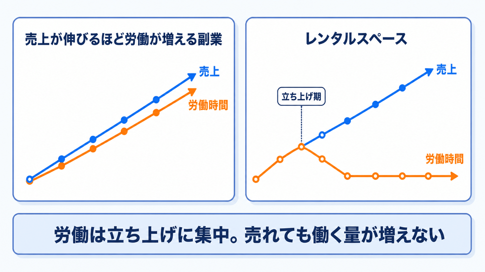
本題の前に、少しだけ私の話をさせてください。
自慢話ではありません。
むしろ逆で、失敗の話です。
私は副業で一度失敗しています
私は元・製薬会社のサラリーマンです。
会社員時代、副業でeBay輸出をやっていました。
月利は、最大200万円まで伸びました。
「これで独立できる」と思いました。
でも、崩壊しました。
売上が伸びるほど、仕入れ・検品・梱包・発送・顧客対応が雪だるま式に増えていく。
月利200万円の月も、私は会社の昼休みに返品クレームの対応をしていました。
あれは「儲かる副業」ではなく、2つ目の仕事でした。
結局、1年で撤退。
トータルは、ほぼトントンかマイナスです。
この失敗が、いまの私の判断基準を作りました。
売上が伸びるほど自分の労働が増えるビジネスは、副業に向かない。
レンタルスペースは、逆です。
労働は、立ち上げの1〜3ヶ月に集中します。
軌道に乗れば、1店舗あたりの作業は1日数分。
清掃は、1回1,000〜1,500円で外注できます。
売れても、働く量がほぼ増えない。
この構造だから、会社員を続けながら店舗を増やせました。
「誰も調べない副業」だから美味しい
Googleキーワードプランナーで調べると、「副業 ブログ」の検索数は月1,000〜2,000回。
「副業 レンタルスペース」は、月20〜40回です。
桁が2つ違います。
つまり、世の中のほとんどの人にとって「選択肢に上がっていない」ビジネスです。
「人気がないなら、ダメなビジネスでは?」と思いましたか。
副業の世界は、逆です。
検索数の多い市場には、その数だけライバルがいます。
一方で、スペースを使いたい需要は膨大にあります。
「○○駅 ダンススタジオ」「○○ 会議室」といった検索です。
やる人が少なくて、使う人は多い。
この非対称性が、レンタルスペースの旨味の正体です。
数字も先に見せておきます
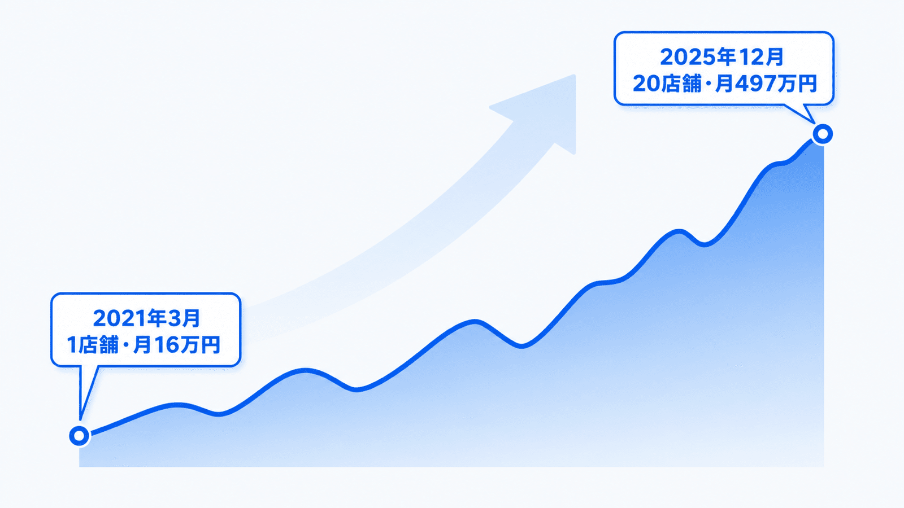
すべて、私の実測です。
・1店舗目(2021年3月)の最初の月: 売上16万円、粗利4.7万円
・5年後(2025年12月・20店舗): 月の売上497万円、粗利288万円
・月間粗利200万円超を6ヶ月連続(2025年10月〜2026年3月)
・1店舗の初期投資: 80〜150万円。回収は8ヶ月〜1年半
・まともに選んだ物件なら、1店舗の手残りは平均月10万円
※「粗利」は、売上から家賃・光熱費などの店舗固定費を引いた額です。
「誰でも必ず儲かる」とは言いません。
物件選びを間違えれば、普通に赤字になります。
私も撤退を2回しています(あとで書きます)。
ただ、正しい手順で進めれば大負けしにくい。
それは、5年分の実数が示してくれています。
開業までの全体ロードマップ
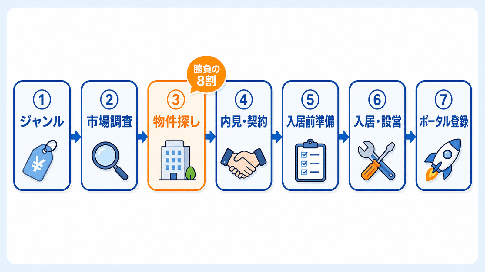
開業までは、7ステップです。
ジャンルを決める(1週間)
市場調査(1〜2週間)
物件探し(1〜3ヶ月)
内見・交渉・契約(2〜4週間)
入居前の開業準備(契約〜入居の空白期間)
入居・設営(数日〜2週間)
ポータルサイト登録・オープン(数日)
一番時間がかかるのは、物件探しです。
逆に言えば、それ以外は段取り次第でサクサク進みます。
1つずつ見ていきましょう。
STEP1 ジャンルを決める
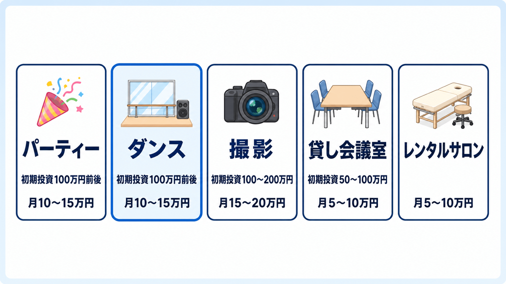
レンタルスペースのジャンルは、大きく5つです。
パーティースペース、ダンススタジオ、撮影スタジオ、貸し会議室、レンタルサロン。
それぞれの初期投資と利益の目安は、図解にまとめました。
選び方の軸は、シンプルです。
「自分がどんな働き方をしたいか」。
・爆発力を狙うなら、パーティー
・リピーター商売で堅実にいくなら、ダンス
・センスを活かしたいなら、撮影
・低コストで手堅く始めたいなら、貸し会議室
ちなみに、私の主戦場はダンスです。
収益の8〜9割がリピーターということも、珍しくありません。
広さは、最初は小箱(20平米未満)か中箱(20〜50平米)を強くおすすめします。
大箱は、家賃も施工費も跳ね上がるからです。
もうひとつ。
おすすめは「ハイブリッド型」です。
「パーティースペース×貸し会議室」のように、用途を組み合わせる。
昼は会議、夜はパーティーと、予約の窓口が広がります。
STEP2 市場調査|人気店を「徹底解剖」する
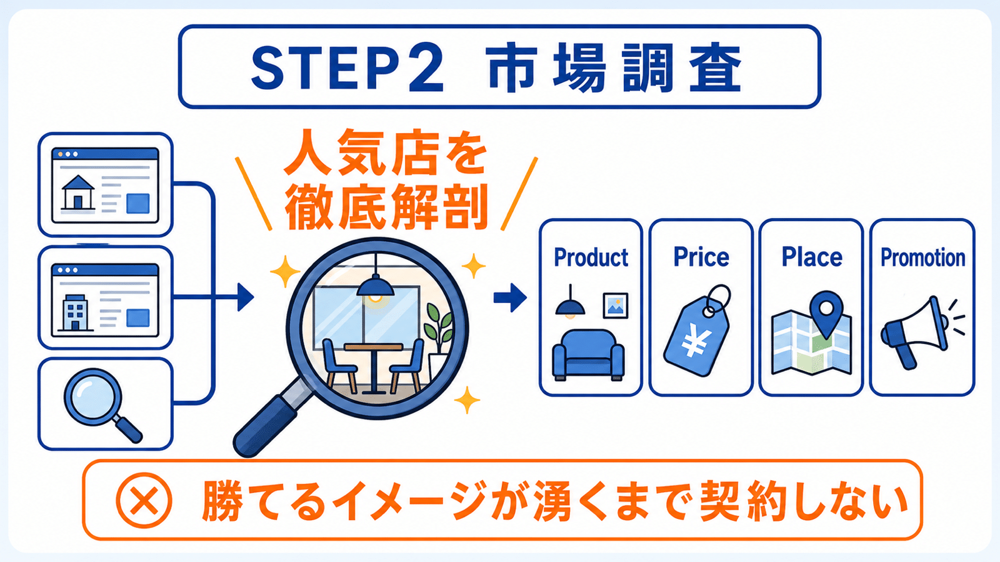
ジャンルが決まったら、すぐ物件探し……ではありません。
先に、市場調査です。
ここを飛ばして「なんとなく良さそうな物件」を借りると、悲劇が起きます。
「予約が、全然入らない」。
使うツールは、3つだけです。
・インスタベース
・スペースマーケット
・Google検索
ポータルサイトで、狙っているエリア×ジャンルを検索します。
人気順に並び替えて、上位のスペースを5〜10店舗ピックアップ。
そして「選ばれている理由」を、4Pの視点で解剖します。
・Product: 誰向けか。広さ、内装の雰囲気、備品
・Price: 基本料金。平日と土日の差、パック料金、レビュー割
・Place: 駅からの距離、周辺環境、エリアの特性
・Promotion: メイン写真、キャッチコピー、レビューの褒められ方と不満点
レンタルスペースは、競合の内装も価格も、予約カレンダーまで全部見えます。
答えを見てから、出店できる。
いわば、カンニングOKの試験です。
鉄則をひとつ。
「勝てるイメージ」が湧くまで、物件を契約しない。
STEP3 物件探し|勝負の8割はここで決まる
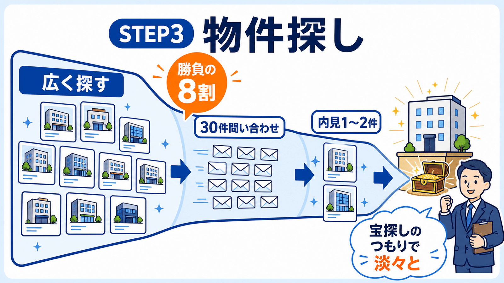
物件探しのメインツールは、アットホームです。
「店舗・事務所」の掲載数が、圧倒的に多いからです。
コツは4つあります。
① 条件を絞りすぎない
「家賃8万円以下・駅徒歩5分・1階限定」。
こんな検索をしていませんか。
これをやると、ヒットはゼロになります。
家賃は予算プラス2〜3万円まで。
駅徒歩は10分まで。
まずは、広く網を張ってください。
業種の絞り込み機能も、使わないこと。
「事務所」や「店舗」の物件でも、聞いてみたら許可が出るケースはたくさんあります。
② 「事務所可」の住居物件も狙い目
居住用マンションの「事務所利用可」物件は、隠れたお宝です。
家賃が安く、初期費用も低い。
ワークスペースや少人数の撮影スタジオなら、許可が下りやすいです。
③ 個人経営の不動産屋さんを味方につける
問い合わせは、メールで。
用途(レンタルスペース)は、最初から正直に伝えます。
そして、大手より個人経営の仲介業者さんがおすすめです。
1件の成約が、自分の収入に直結する。
だから、泥臭く大家さんに交渉してくれます。
「将来的に3店舗、5店舗と増やしたい」と伝えてみてください。
あなたの代わりに毎日物件を探してくれる、強力な分身になってくれます。
④ 逆引きリサーチ
人気スペースのビル名を調べて、そのビルの空室をGoogleで探す方法です。
「同じビルでレンタルスペースが営業していますよね?私も同じ用途で借りたいです」
こう持ちかけます。
大家さんの許可が既に下りているという前例が効いて、審査も通りやすい。
お宝物件は、ライバルの隣にあるかもしれないのです。
最後に、心構えをひとつ。
物件探しは、確率論です。
30件問い合わせて、内見まで行けるのは1〜2件。
それが普通です。
心を折らずに、宝探しのつもりで淡々と数をこなしてください。
STEP4 内見・交渉・契約
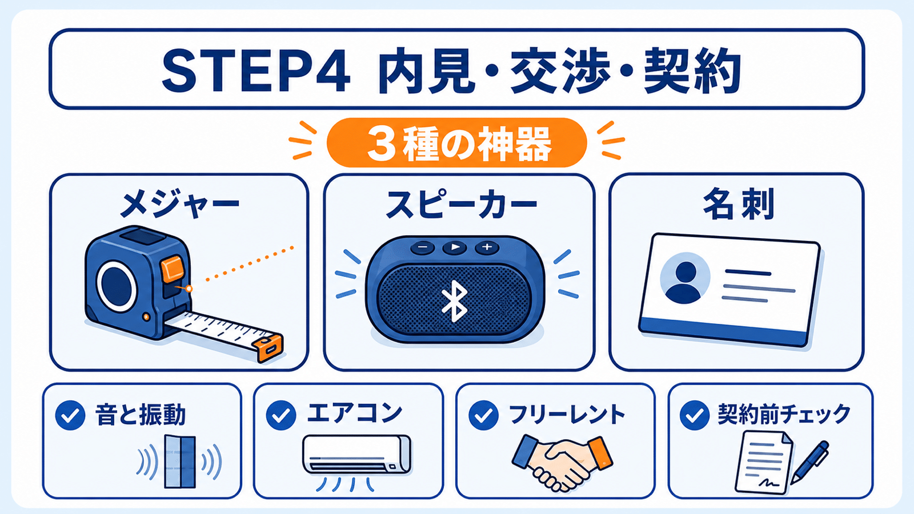
内見は、見学ではありません。
その物件が「安定してお金を生めるのか」を見極める場です。
持ち物は「3種の神器」
・メジャー(レーザー距離計+巻き尺の2刀流が最強)
・Bluetoothスピーカー(音漏れと振動の確認用)
・名刺(真剣さが伝わり、交渉が有利になります)
現場で確認すべきは「建物と音」
まず、壁の構造です。
RC造に見えても、境界壁だけボード1枚というケースがあります。
壁を叩いて、軽い音がしないか確認してください。
ダンス系なら、床を踏み鳴らして振動も見ます。
下の階でどう聞こえるかまで、確認させてもらいましょう。
エアコンは「設備」か「残置物」かを必ず聞くこと。
残置物だと、壊れたら自己負担です。
古すぎるなら、入居前に交換交渉を。
「とりあえず借りて、ダメだったらその時考えよう」。
これは、レンタルスペースでは通用しません。
理由は、私の失敗談のところで書きます。
交渉すべきは「フリーレント」
入居から予約が入るまでは、売上ゼロで家賃だけ発生します。
だから私は、必ずフリーレント(賃料無料期間)を相談します。
「内装を整えて物件価値を高めるので、その間の1ヶ月分を無料にしてほしい」
大家さんにもメリットのある提案にするのが、コツです。
交渉は、タダです。
言ってみて通ればラッキー、くらいの気持ちでどうぞ。
契約前の最終チェック
・解約予告期間(退去は何ヶ月前に言えばいいか)
・敷金の償却(退去時にいくら返ってくるか)
申し込みの時点では、法的な拘束力はありません。
納得がいかなければ、契約しない勇気も持ってください。
なお、審査では会社員の信用力が最強の武器になります。
「副業だから落とされるかも」という心配は、不要です。
STEP5 入居前の開業準備|空白期間を使い倒す
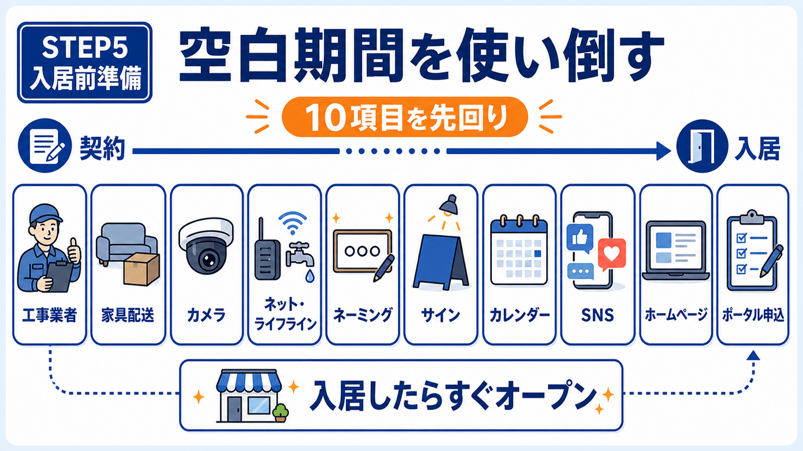
契約から入居までの期間は、待ち時間ではありません。
仕込み期間です。
入居したら、1日でも早くオープンする。
そのためのチェックリストが、この10項目です。
内装業者への発注(入居前でも現地調査は可能)
家具・備品の発注(入居日に届くよう日時指定)
カメラマンの発注(高くても5万円以内。写真は予約率に直結するので妥協禁止)
インターネット・水道光熱費の契約(回線工事は時間がかかるので最優先)
お店の名前を決める(奇をてらわず、シリーズ展開しやすい名前に)
看板・ウィンドウサインの発注
店舗用Googleアカウントとカレンダーの準備(ダブルブッキング防止の生命線)
SNSアカウントの作成(撮影スタジオならInstagram必須)
公式ホームページの作成(リピーター型ジャンルなら。ポータル手数料25〜35%を数%に圧縮できます)
ポータルサイトへの申請準備(タイミングはSTEP7で)
STEP6 入居・設営
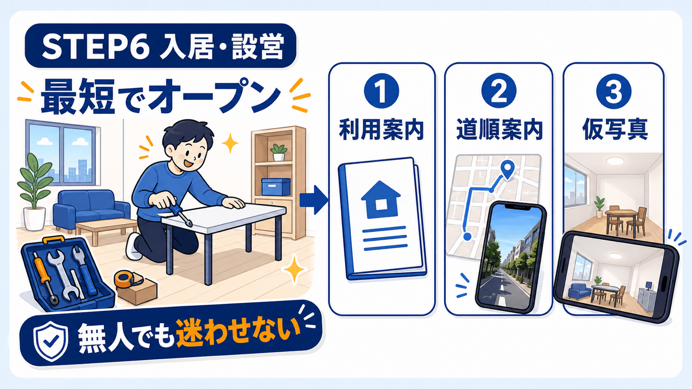
入居したら、一気に設営です。
道具は4つ。
電動ドライバー(六角アタッチメント必須)、軍手、テプラ、強力両面テープ。
やることの要点は、3つです。
・利用案内の掲示物: エアコンの使い方からゴミの捨て方まで、初めての人が迷わないレベルで掲示。Wi-FiはQRコード化してパウチ
・道順案内: 駅からの道を歩いて写真を撮り、Googleドキュメントにまとめて公開リンクに
・仮写真の撮影: スマホ広角で部屋の四隅から対角線に撮れば、ポータル申請には十分
レンタルスペースは、スタッフ無人で回すビジネスです。
掲示物の丁寧さが、そのままお客さんへの真心になります。
STEP7 ポータルサイト登録と価格戦略
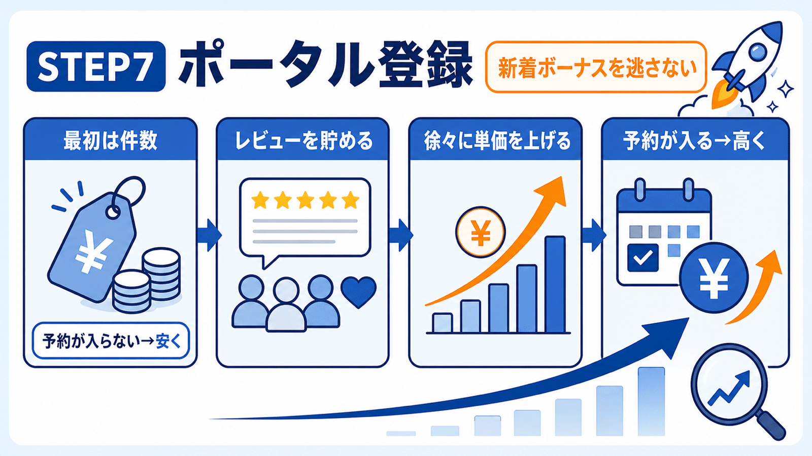
いよいよ、最後のステップです。
登録するポータルサイトは、この5つ。
・インスタベース
・スペースマーケット
・カシカシ
・ヨヤッピン（旧スペイシー）
・空箱 by GMO
これ以外は、不要です。
私は過去に、10万円払って別のポータルに掲載したことがあります。
予約は、1件も入りませんでした。
申請タイミングが命
ポータルサイトには「新着ボーナス期間」があります。
掲載直後だけ、検索上位に表示される仕組みです。
オープン前に早々と申請すると、この一番おいしい期間を無駄にします。
申請は、オープンできる日の数日前に。
最初は「金額」より「件数」
レンタルスペースの単価は、本来しっかり取るべきです。
でも、オープン直後だけは例外です。
ボーナス期間中に予約件数を積むほど、その後も検索順位で優遇され続けます。
最初は価格を抑えて、とにかく件数を稼ぐ。
軌道に乗ったら、徐々に本来の単価へ。
・予約が入らない → 安くする
・予約が入っている → 高くする
この調整を、初期ほどマメにやってください。
レビューを獲得する仕組み
おすすめは「レビュー必須プラン」です。
「レビュー投稿で1時間100円引き」のようなプランを作ると、投稿率が大きく上がります。
もうひとつ。
利用後のお礼メッセージで、先にこちらからお客様に星5をつけます。
「お客様へのレビューで星5をつけさせていただきました」と伝える。
返報性の原理で、レビューが返ってきやすくなります。
ここまでやれば、予約は徐々に入り始めます。
私の失敗談|それでも赤字物件ゼロの理由
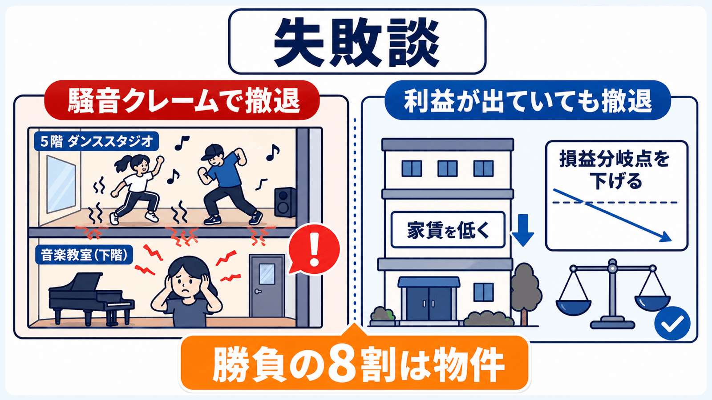
いいことばかり書いても、信用できないですよね。
失敗も書きます。
私は23スペース出店して、撤退を2回しています。
1つは、ビルの5階に出したダンススタジオ。
下の階が、楽器演奏の教室でした。
「防音しているから大丈夫だろう」と踏んで出店したら、騒音クレームになりました。
利益は、しっかり出ていた物件です。
正直、めちゃくちゃ悔しかった。
でも、撤退しました。
STEP4で「音と振動の確認」をしつこく書いたのは、この経験があるからです。
それでも、月次で恒常的に赤字だった物件はゼロです。
これは腕自慢ではなく、構造の話です。
最大の固定費である家賃を低く抑えれば、損益分岐点が下がる。
だから、大負けしにくい。
株やFXのように、一晩で溶けることもありません。
だからこそ、この記事で一番読み返してほしいのはSTEP3とSTEP4です。
勝負の8割は、物件で決まります。
開業後の世界「1店舗=月10万円」の足し算
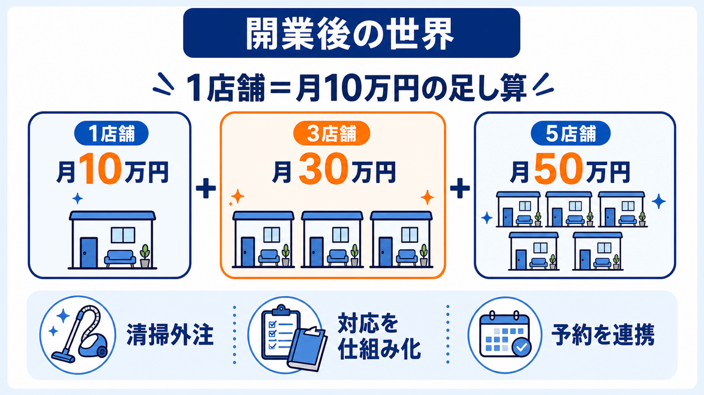
最後に、開業した後の話を少しだけ。
軌道に乗ったレンタルスペースの手残りは、平均で1店舗=月10万円です。
この基準で考えると、副業の計画が初めて「足し算」になります。
・月10万円の副収入が欲しい → 1店舗
・月30万円(生活費レベル) → 3店舗
・月50万円(給料超え) → 5店舗
私はこの積み上げを実際にやって、給料を超えた時点で会社を辞めました。
精神論ではなく、足し算です。
そして、運営は仕組み化できます。
清掃は外注、問い合わせ対応はマニュアル化、予約管理はカレンダー連携。
1店舗あたりの作業は、1日数分になります。
だから、2店舗目、3店舗目に進めるんです。
よくある質問|開業サポートやフランチャイズは必要?
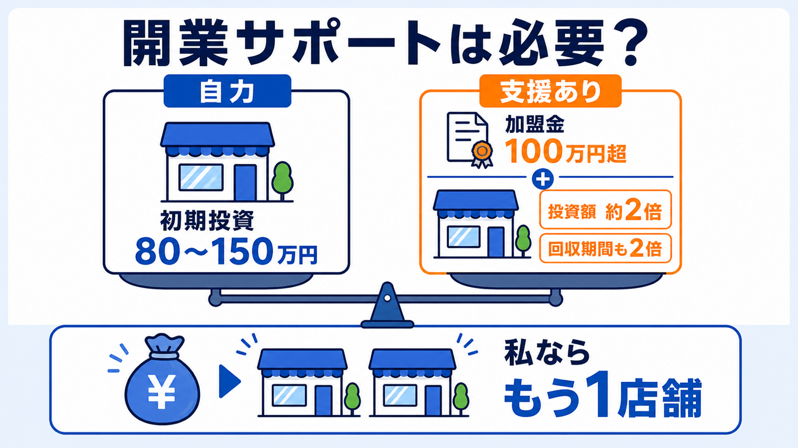
レンタルスペースを調べ始めると、必ず出会うものがあります。
加盟金が100万円を超える、開業支援サービスやフランチャイズです。
中身は、物件探しの支援、コンセプト設定、ホームページ制作、写真撮影など。
まさに、この記事で書いてきたことです。
否定はしません。
伴走してくれる人がいる安心感には、価値があると思います。
ただ、数字だけは冷静に見てください。
このビジネスの初期投資は、80〜150万円です。
そこに100万円を超える加盟金が乗ると、投資額は約2倍になります。
月の利益が同じなら、回収期間も2倍。
1年で回収できるはずの店が、2年かかる計算です。
私なら、そのお金でもう1店舗出します。
開業支援にお金を払う前に、まず無料の情報で試してみてください。
やり方は、この記事と連載に全部書いてあります。
【まとめ】今日からやること
7ステップ、おさらいです。
ジャンル: 自分の働き方に合うものを。最初は小箱・中箱で
市場調査: 人気店を4Pで解剖。「勝てるイメージ」が湧くまで契約しない
物件探し: アットホームで広く網を張る。30件問い合わせて内見1〜2件の確率論
内見・契約: 3種の神器を持参し、音と振動を徹底確認。フリーレントは必ず相談
入居前準備: 10項目のチェックリストを空白期間に消化
設営: 掲示物・道順案内・仮写真でスピードオープン
ポータル登録: 新着ボーナスに合わせて申請。最初は件数、レビューを仕組みで貯める
そして、今日からやることは3つです。
・ポータルサイトを開いて、近所の人気スペースを1つ「4P」で解剖してみる
・アットホームで、狙いエリアの「店舗・事務所」物件を眺めてみる
・この記事をブックマークして、いま自分がいるステップの詳細記事を読む
各ステップの詳しい解説は、連載記事に書いています。
・ジャンルの選び方
・市場調査術
・儲かる物件探し術
・内見・契約交渉の全手順
・入居前の開業チェックリスト
・入居〜設営の完全チェックリスト
・ポータルサイト登録と価格戦略
5年前、私は酔った勢いで適当に問い合わせた物件が、そのまま1号店になりました。
その1号店は、いまも安定して稼ぎ続けています。
最初の一歩は、案外そんなものです。
まずはポータルサイトを開いて、近所の人気スペースを1つ、解剖してみてください。
ではまた!